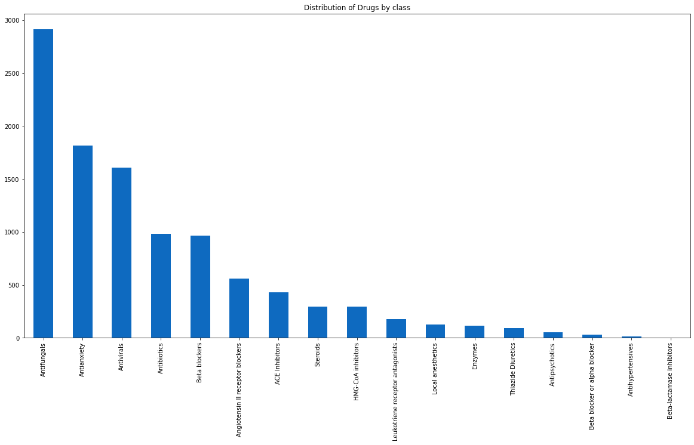
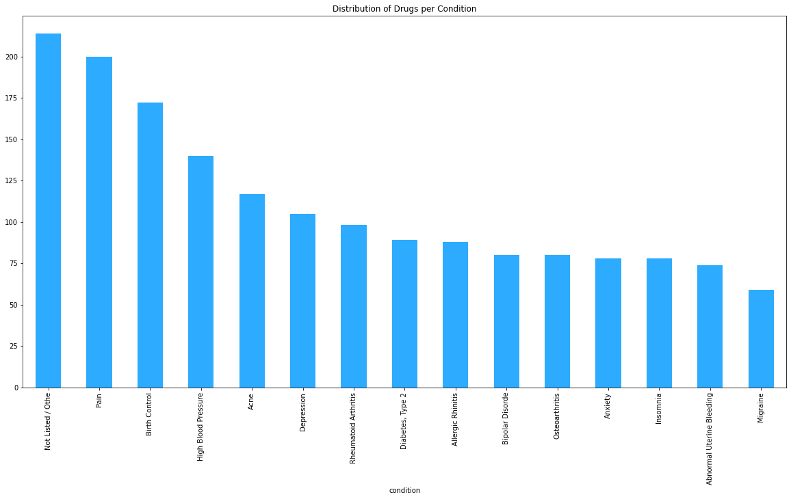
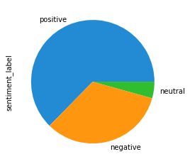
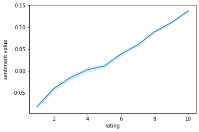
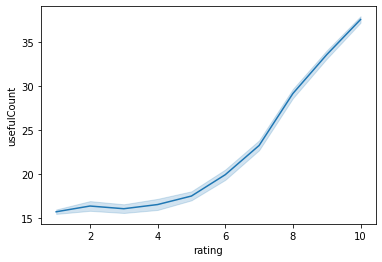
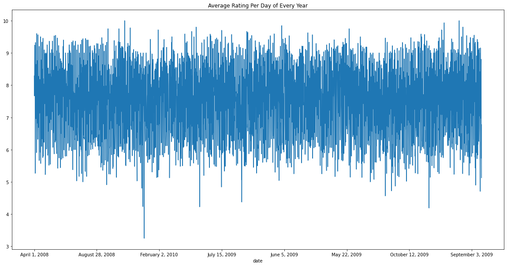

DRUG REVIEW ANALYSIS PROJECT

Introduction
The drug review dataset contains patient reviews on specific drugs, along with related conditions and ratings reflecting overall patient satisfaction. In this project, we will explore the dataset to answer various research questions and gain insights into the drugs and conditions represented in the data.
Research Questions
- What is the most popular drug?
- What are the groups/classifications of drugs used?
- Which drug has the best review?
- How many drugs do we have?
- The number of drugs per condition?
- Number of patients that searched on a particular drug?
- How genuine the review is?
- How many reviews are positive, negative or neutral?
- Correlation between rating and review and users who found the review useful?
- Distribution of rating?
- Amount of review made per year and per month?
Methodology
This dataset contains patient reviews on specific drugs along with related conditions and a 10-star rating reflecting overall patient satisfaction. The dataset includes features such as the drug name, condition name, patient review, rating from a range of 1 to 10 stars, date of review entry, and number of users who found the review useful. The dataset was downloaded from the following link: https://www.kaggle.com/jessicali9530/kuc-hackathon-winter-2018
Results
- What is the most popular drug?
- What are the groups/classifications of drugs used?
- Which drug has the best review?
- How many drugs do we have per class? Top 15
- Antifungals: This drug class is used to treat fungal infections, and it is not surprising that it is among the largest drug classes. Fungal infections can be difficult to treat and can affect various parts of the body, including the skin, nails, and lungs.
- Antianxiety: Anxiety disorders are among the most common mental health disorders, affecting millions of people worldwide. Antianxiety drugs are used to manage the symptoms of anxiety disorders, and they are also among the largest drug classes.
- Antivirals: Viral infections can be difficult to treat, and antiviral drugs are essential in managing these infections. With the emergence of new viruses and viral strains, the demand for antiviral drugs is increasing.
- The number of drugs per condition?
- What is the distribution of drugs per condition?
- Pain: Pain is the condition with the highest number of drugs in the dataset, with a total of 200 drugs. This is not surprising as pain is a common condition that affects people of all ages and backgrounds. Pain medications come in different forms such as pills, patches, gels, and injections, and are used to manage acute or chronic pain.
- Birth Control: Birth control is the second condition with the highest number of drugs, with a total of 173 drugs. Birth control medications come in different forms such as pills, patches, rings, and injections, and are used to prevent pregnancy. They work by inhibiting ovulation, thickening cervical mucus, or preventing fertilization.
- High Blood Pressure: High blood pressure is the third condition with the highest number of drugs, with a total of 147 drugs. High blood pressure, also known as hypertension, is a common condition that affects millions of people worldwide. It is a major risk factor for heart disease, stroke, and kidney failure. Medications for high blood pressure come in different forms such as pills, patches, and injections, and work by relaxing blood vessels or reducing the amount of fluid in the body.
- Acne: Acne is the fourth condition with the highest number of drugs, with a total of 120 drugs. Acne is a common skin condition that affects people of all ages, but is most common in teenagers. Acne medications come in different forms such as creams, gels, and pills, and work by reducing inflammation, killing bacteria, or regulating oil production.
- How genuine the review is?
- How many reviews are positive, negative or neutral?
- Correlation between rating and review and users who found the review useful?
- What is the distribution of rating?
- Amount of reviews made per year and per month?
#Loading the dataset
import pandas as pd
drug=pd.read_csv(r"C:\Users\HENRY\Downloads\drugsCom_raw\drugsComTrain_raw.tsv",sep ='\t')
#Preview the data
drug.head()
#Top 15 most popular drugs
drug['drugName'].value_counts().nlargest(15)
Output: Levonorgestrel = 3657
drug_suffix = {
"alol":"Beta blocker or alpha blocker",
"ase":"Enzymes",
"azepam":"Antianxiety"
,"bactam":"Beta-lactamase inhibitors"
,"caine":"Local anesthetics"
,"cilin":"Penicillins"
,"conazole":"Antifungals"
,"cycline":"Antibiotics"
,"dralazine":"Antihypertensives"
,"flurane":"Inhalation Anesthetic"
,"lukast":"Leukotriene receptor antagonists"
,"mantadine":"Antivirals"
,"mycin":"Antivirals"
,"olol":"Beta blockers"
,"olone":"Steroids"
,"oxacin":"Antifungals"
,"parin":"Antibiotics"
,"peridol":"Antipsychotics"
,"poetin":"Erythropoeitin"
,"pril":"ACE Inhibitors"
,"sartan":"Angiotensin II receptor blockers"
,"sulfa":"Antibiotics"
,"thiazide":"Thiazide Diuretics"
,'vastatin':"HMG-CoA inhibitors"
}
#This function classifies drugs based on the name you have inputed.
def classify_D(drugname):
for i in drug_suffix.keys():
if drugname.endswith(i):
print(True)
print("The drug class is: ",drug_suffix[i])
#Classifying the drug class example
classify_D('Atenolol')
The drug class is: Beta blockers
Unnamed: 0
drugName
condition
review
rating
date
usefulCount
drug_class
sentiment value
sentiment label
sentiment_label
1
95260
Guanfacine
ADHD
"My son is halfway through his fourth week of ...
8.0
April 27, 2010
192
None
0.168333
positive
positive
3
138000
Ortho Evra
Birth Control
"This is my first time using any form of birth...
8.0
November 3, 2015
10
None
0.179545
positive
positive
4
35696
Buprenorphine / naloxone
Opiate Dependence
"Suboxone has completely turned my life around...
9.0
November 27, 2016
37
None
0.194444
positive
positive
7
102654
Aripiprazole
Bipolar Disorde
"Abilify changed my life. There is hope. I was...
10.0
March 14, 2015
32
None
0.074107
positive
positive
9
48928
Ethinyl estradiol / levonorgestrel
Birth Control
"I had been on the pill for many years. When m...
8.0
December 8, 2016
1
None
0.079167
positive
positive
The drug with the best review: Aripiprazole
plt.figure(figsize=(20,10))
drug['drug_class'].value_counts().plot(kind='bar')
plt.title("Distribution of Drugs by class")
plt.show()

OBSERVATION
#THE NUMBER OF CONDITION
len(drug['condition'].unique())
Output: There are 885 drugs per condition
#Drugs per condition Top 15
drug.groupby('condition')['drugName'].nunique().nlargest(15)
plt.figure(figsize=(20,10))
drug.groupby('condition')['drugName'].nunique().nlargest(15).plot(kind="bar")
plt.title("Distribution of Drugs per Condition")
plt.show()

Drugs per Condition
This function allows for it to be possible to determine the emotion behind text.
from textblob import TextBlob pip install -U textblob #this function gets the numerical value of the blob def get_sentiment(text): blob = TextBlob(text) return blob.polarity #this function automaticlly determines numerical value(positive or negative) def get_sentiment_label(text): blob = TextBlob(text) if blob.polarity > 0: result = 'positive' elif blob.polarity <0 result = 'negative' else: result = 'neutral' return result #Creating a column containing sentiment drug['sentiment value'] = drug['review'].apply(get_sentiment) drug['sentiment_label'] = drug['review'].apply(get_sentiment_label) drug[['review','sentiment value','sentiment_label']]
| review | sentiment value | sentiment_label | |
|---|---|---|---|
| 0 | "It has no side effect, I take it in combinati... | 0.000000 | neutral |
| 1 | "My son is halfway through his fourth week of ... | 0.168333 | positive |
| 2 | "I used to take another oral contraceptive, wh... | 0.067210 | positive |
| 3 | "This is my first time using any form of birth... | 0.179545 | positive |
| 4 | "Suboxone has completely turned my life around... | 0.194444 | positive |
| ... | ... | ... | ... |
#The number of negative, positive and neutral reviews drug['sentiment_label'].value_counts() #Visualization drug['sentiment_label'].value_counts().plot(kind ='pie')
#Correlation Between our sentiment and rating
sns.lineplot(data = drug, x= 'rating',y='sentiment value')
plt.show()

OBSERVATION
As shown in the image above, there appears to be a positive correlation between the sentimental value of reviews and the associated rating. This suggests that reviews with a more positive sentiment tend to be associated with higher ratings.
#Correlation between rating and sentiment
sns.lineplot(data = drug, x= 'rating',y='sentiment value',hue ='sentiment_label')

Observation
There is a positive correlation between the usefulCount and rating of drugs, as shown in the image above
The image illustrates that as the number of usefulCount increases, the rating also tends to increase. This suggests that drugs with a higher number of usefulCount tend to have higher ratings. However, it is important to note that correlation does not necessarily imply causation, and there may be other factors that influence the rating of drugs.
#Average Rating Per Day of Every Year
drug.groupby('date')['rating'].mean().plot(figsize=(20,10))
plt.title("Average Rating Per Day of Every Year")
plt.show()
